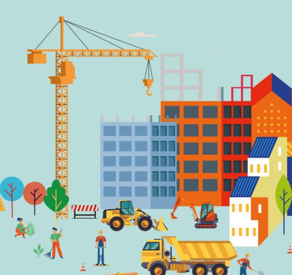

Micro-crédit professionnel :
- Prêt Individuel :
- Al Fardi
- Al Istiktab
- Attakadoum
- Attajhiz al hirafi
- Prêt Solidaire :
- Al Intilaka
- AL Mouakaba
- ATTAHIL
- Prêt Coopératives :
- Salaf Attaaounia
Micro-crédit rural:
- Al Karaoui
- Al Karaoui ikhlass
Micro-crédit logement :
- Islah Assakan
- Almilkia.
